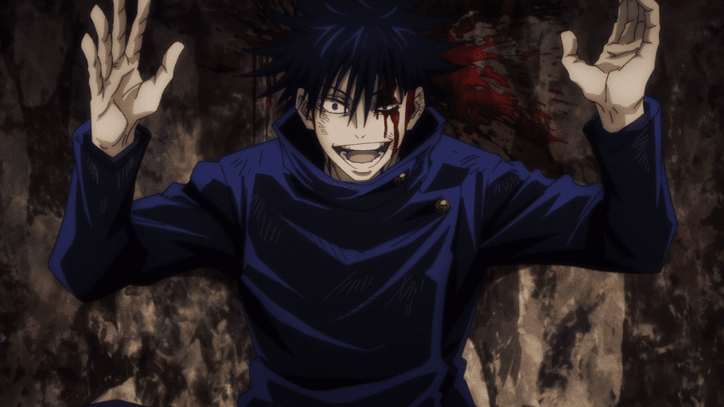

Resumo do anime

Jujutsu Kaisen é um anime do gênero sobrenatural, onde os personagens têm que lidar com aparições, maldições e feitiçaria. O protagonista, Yuji Itadori, perde o avô logo no início do anime, deixando para Itadori o legado de viver uma vida em que ele possa escolher como morrer sem arrependimentos. O anime possui diversas cenas de lutas e personagens com habilidades, o que deixa o anime com um grande foco em lutas para combater o mau.
Suguro Geto
Suguro Gueto é um feiticeiro que abandonou o Colégio de Jujutsu porque passou a ter opiniões um tanto diferentes sobre a sociedade, então, ele se tornou um vilão. Antes de se tornar antagonista, era um dos pupilos dentro do Colégio Jujutsu, até que passou a ter visões negativas de humanos que não possuíam poderes ou habilidades e então se tornou um dos maiores usuários de maldições da era moderna. Ele também foi responsável por liberar mil espíritos pelas ruas, para que pudesse roubar algo que era muito valioso para ele, ambicioso ao ponto de ter como objetivo selar Satoro Gojo para que ele possa colocar seus planos de ter uma Era de Maldições.
Mahito
Mahito é um espírito amaldiçoado que tem uma mentalidade infantil e gosta de brincar com os sentimentos humanos, isso o torna sádico. Ele não se importa se estará vivo para ver se algum dia as maldições irão controlar o universo. Ele é extremamente forte, consegue desfigurar seus oponentes e também alterar sua própria forma física, caso esteja ferido, ele pode se regenerar e até mesmo transformar partes do seu corpo em armas mortais. Todo esse poder é possível por causa de sua alma que permite toda a flexibilidade de seu corpo independente de tecidos cutâneos e ossos.
Megumi Fushiguro
Fushiguro é um membro da família Zen'in, graças a isso foi possível herdar a habilidade Técnica das Dez Sombras, usada para invocar o Shikigami, assim podendo ser usada em batalhas ofensivas ou defensivas. Ele é um dos personagens centrais da história, ele defende que as pessoas boas têm mais chance de viver graças aos feiticeiros que garantem isso. Ser feiticeiro para ele não é ser herói, ele apenas se motiva em salvar pessoas boas.
Satoru Gojo

O feiticeiro mais forte de Jujutsu, é mentor de Yuji, Fushiguro e Nobara. Satoro é extremamente forte porque consegue controlar a energia amaldiçoada e duas técnicas que ele herdou do clã Gojo: Limitless e Six Eyes. Sem contar que ele tem controle do espaço, podendo expandir o mesmo quando quiser.
Yuji Itadori
Itadori é um jovem estudante do ensino médio, ao se ver em situação de perigo acaba comendo um dedo amaldiçoado. O foco do anime é contar a história desse jovem que é inserido em um mundo diferente do que estava acostumado após a morte de seu avô. Ele é extremamente rápido e provou conseguir atravessar uma pista de 50 metros em 3 segundos graças a sua habilidade.

Kento Nanami
Kento Nanami é um personagem secundário, porém faz parte da escola de Jujutsu e exerce a profissão de xamã, confuso, ele não sabia o que queria para sua vida, porém em meio a trama ele descobre o que realmente importa em sua vida. Ele estudou na escola de Jujutsu de Tokyo, onde foi aluno de Satoro Gojo e Suguru Geto. Nanami também largou a vida de feiticeiro e resolveu viver como uma pessoa normal, porém desistiu depois de 4 anos e resolveu voltar a ser feiticeiro e trabalhar para o colégio Jujutsu.